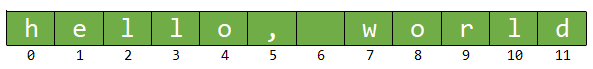

Selecting Characters
Positions in a string are subscripted (or indexed) starting at 0. The characters in the string "hello, world" are index like this:

The numbers are alled the index or subscript; they must be positive (unlike Python where subscripts can be negative). Indexes start at 0 because it represents how many steps you need to travel from the beginning of the string to get to the element you are interested in. To retrieve the 'e', you have to travel one character from the beginning, so its subscript is 1.
The <string> library has four ways to select characters from a non-empty string:
- Use the subscript operator like this: cout << str[0];
- Use the member function at() like this: cout << str.at(0);
- Use the members front() and back() in C++ 11+: cout << str.front();
If the string variable str contains "hello, world", all of these expressions refer to the character 'h' at the beginning of the string.
The at() member function makes sure the index is in range; the subscript operator does not. Using the subscript operator when a subscript is out of range is undefined. You should generally use at() unless you are certain that your indexes are in range.
Selecting an individual character in a string returns a reference to the character in the string instead of a copy of that character, as Java's charAt(index) method does. You may assign a new value to that reference, like this:
str[0] = 'H'; // or
str.at(0) = 'H'; // works as wellBoth lines change the value from "hello, world" to "Hello, world".
 This course content is offered under a
CC
Attribution Non-Commercial license. Content in this course
can be considered under this license unless otherwise noted.
This course content is offered under a
CC
Attribution Non-Commercial license. Content in this course
can be considered under this license unless otherwise noted.